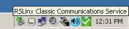
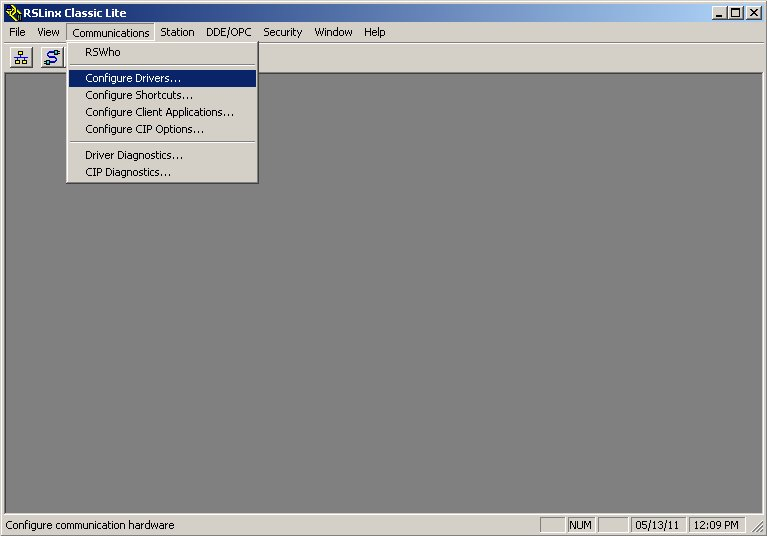
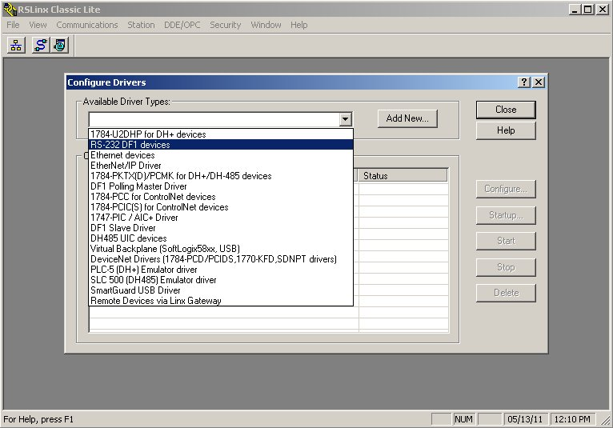
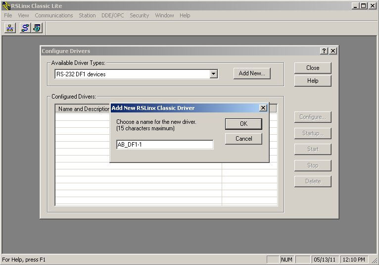
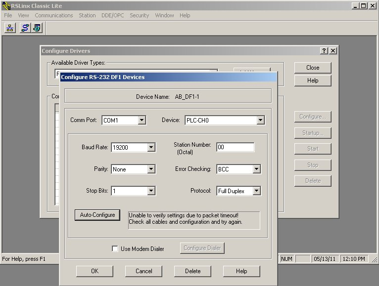
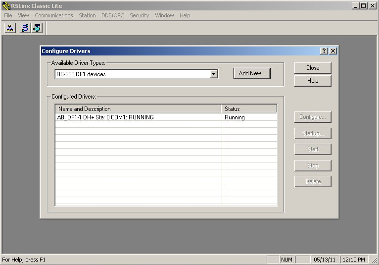
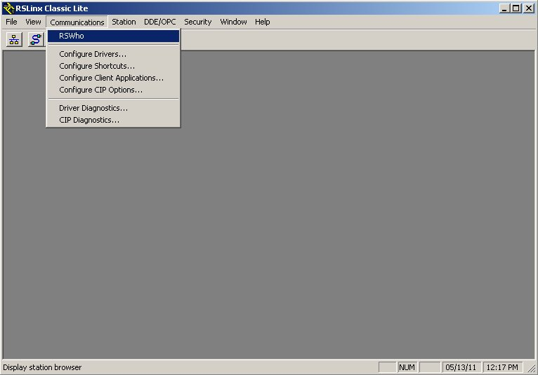
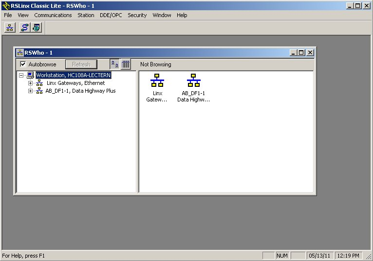

Allen-Bradley programmable logic controllers (PLCs) require two separate application programs running in a personal computer (PC) to create, edit, and download ladder-diagram programs to the PLC. The first application is called RSLinx, which manages all digital communications between the PC and the PLC. The second application is called RSLogix, which is a program editor for the PLC. This tutorial steps you through the use of RSLinx as though you were using it for the very first time.
When you start up a PC with RSLinx installed, the RSLinx application should already be running as a ``background'' task, with a small icon showing in the Windows ``system tray'' near the lower-right corner of the screen. The RSLinx icon appears in this screen-capture image directly below the letter ``o'' in the word ``Communications'':

If this icon does not appear in your PC's system tray, you need to start up RSLinx from the program directory, just like starting up any other application program. Once this has been done on your PC, you should never have to do it again. Clicking on this icon will open a new window where you may opt to configure a driver for communicating with your PLC.
Once this new window opens, select the ``Configure Drivers...'' option under the ``Communications'' menu to begin:

Next, select an appropriate driver to communicate with your PLC. The driver type you select depends on the type of network connecting your PC to your PLC. If you are using a serial data cable to connect to the PLC, the appropriate driver will be ``RS-232 DF1 devices''. If you are using an 8-pin Ethernet cable to connect to the PLC, the best driver will be ``EtherNet/IP Driver'':

After selecting the appropriate driver type, you must create a new driver instance. The rest of this tutorial will assume the use of the RS-232 serial driver:

RSLinx gives you the option to custom-name this driver, but you may opt to go with the default name given (here, ``AB_DF1-1'').
After creating a new driver instance, select it from the Configured Drivers list and click on the ``Configure...'' button to open up a new window:

Since the RS-232 DF1 driver assumes the use of a serial cable, you must select the serial port it is plugged in to (usually COM1). Next, click on the ``Auto-Configure'' button, which prompts RSLinx to sequentially try all serial parameter combinations (baud rate, parity, stop bits, error-checking) until the correct one is found for your PLC. In the screenshot shown here, I get an error message talking about packet timeout. This is because I tried the Auto-Configure option while no PLC was plugged into my PC.
Now the driver instance you created earlier should be ``running'' which means your PC is now communicating with your PLC:

An important thing to be aware of is that your PC's serial port (here, COM1) will continue to be used by RSLinx so long as this driver is running. If you attempt to use any other application program needing that COM port, that application will crash. In order to ``free up'' the COM port for use with another application, you must either stop the RSLinx driver instance, or shut down RSLinx altogether.
At this point, you have done all you need to do with RSLinx, which means you may proceed to using RSLogix to write and download programs to your PLC. However, one more step you may take with RSLinx is to view which PLCs are communicating with your PC, since RSLinx supports simultaneous communication with multiple PLCs. To do this, go to the ``Communications'' menu and choose ``RSWho'':

The result will be a tree-structure list on the left-hand side of a new window, showing your PC as a ``Workstation'' and all driver types as expandable links underneath. You may click on the ``+'' symbols to expand these links and view specific devices communicating with your PC workstation via RSLinx:

At this point, feel free to close the RSLinx Classic Lite window altogether. Since RSLinx is a background task in your computer's Windows operating system, it will still be running even if there are no open RSLinx windows on the screen. The persistent icon in the system tray shows RSLinx is still running.